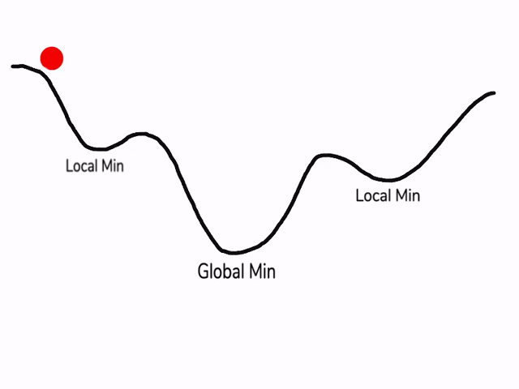

1. Initialize the weights and biases
In deep learning, initializing weights and biases appropriately is crucial for the performance and convergence of neural networks. Here’s a more detailed look at the initialization process for both weights and biases:
Weights Initialization
- Random Initialization: Weights are typically initialized randomly. This helps in breaking the symmetry and ensures that neurons in different layers learn different features.
Purpose of Small Initial Weights
Avoid Exploding/Vanishing Activations: Large weights can cause activations to grow exponentially (exploding), while small weights can cause activations to shrink exponentially (vanishing), both hindering learning.
Break Symmetry: Random initialization breaks the symmetry where all neurons compute the same gradient, allowing them to learn different features.
Gradient Flow: Proper scaling helps maintain healthy gradient flow during backpropagation, preventing gradients from exploding or vanishing.
Bias Initialization
- Common Practice: Biases are often initialized to zero.
- Reasoning:
- Starting with zero biases does not break the symmetry as weights are already randomized.
- Zero initialization for biases can simplify the initial forward pass without affecting the ability of the network to learn.
- Non-Zero Initialization: In some specific cases, biases might be initialized to small positive values (e.g., 0.01) to ensure that all neurons in a ReLU network are initially active and contributing to the gradient.
Importance of Setting a Random Seed
Setting a random seed with np.random.seed(1) in NumPy is crucial for:
Reproducibility: Ensures the same random numbers are generated every time, enabling debugging and result verification.
Consistency: Provides consistent initialization of neural network weights and biases, leading to consistent training outcomes.
Collaboration: Allows others to replicate experiments and achieve the same initial conditions, facilitating collaboration and reproducibility.

n is the number of the input features = 2
k nodes = hidden_size1 = 6
p nodes = hidden_size2 = 4
q nodes = output_size =1
import numpy as np
#Input: [m x n]
# m is the number of training examples
# n is the number of features in each example = input layer
# 1. Initialize the weights and biases
def initialize_parameters(input_size, hidden_size1, hidden_size2, output_size):
np.random.seed(1)
# W1: [n x k] (n nodes = input layer), first hidden layer (k nodes = hidden_size1)
# b1: [k x 1] Biases for the first hidden layer, k nodes = hidden_size1
W1 = np.random.randn(hidden_size1, input_size) * 0.01
b1 = np.zeros((hidden_size1, 1))
# W2: [k x p] (k nodes = hidden_size1), second hidden layer (p nodes = hidden_size2)
# b2: [p x 1] Biases for the second hidden layer, p nodes = hidden_size2
W2 = np.random.randn(hidden_size2, hidden_size1) * 0.01
b2 = np.zeros((hidden_size2, 1))
# W3: [p x q] (p nodes = hidden_size2), the output layer (q nodes = output_size)
# b3: [q x 1] Biases for the output layer, q output nodes = output_size
W3 = np.random.randn(output_size, hidden_size2) * 0.01
b3 = np.zeros((output_size, 1))
return W1, b1, W2, b2, W3, b3
# Define the sigmoid activation function
def sigmoid(Z):
return 1 / (1 + np.exp(-Z))2. Define the forward pass
# 2. Define the forward pass
def forward_pass(X, W1, b1, W2, b2, W3, b3):
# A1: [m x k] Output of the first hidden layer,
# after applying activation function to (Input x W1 + b1)
Z1 = np.dot(W1, X) + b1
A1 = sigmoid(Z1)
# A2: [m x p] Output of the second hidden layer,
# after applying activation function to (A1 x W2 + b2)
Z2 = np.dot(W2, A1) + b2
A2 = sigmoid(Z2)
# Output: [m x q] Final output of the neural network,
# after applying activation function to (A2 x W3 + b3)
Z3 = np.dot(W3, A2) + b3
A3 = sigmoid(Z3)
return Z1, A1, Z2, A2, Z3, A33. Compute the loss (Mean Squared Error)

# 3. Compute the loss (Mean Squared Error)
def compute_loss(Y, A3):
m = Y.shape[1]
loss = (1/m) * np.sum((A3 - Y) ** 2)
return loss4. Define the backward pass
# 4. Define the backward pass
def backward_pass(X, Y, Z1, A1, Z2, A2, Z3, A3, W1, W2, W3):
m = Y.shape[1]
dZ3 = A3 - Y
dW3 = (1/m) * np.dot(dZ3, A2.T)
db3 = (1/m) * np.sum(dZ3, axis=1, keepdims=True)
dA2 = np.dot(W3.T, dZ3)
dZ2 = dA2 * A2 * (1 - A2)
dW2 = (1/m) * np.dot(dZ2, A1.T)
db2 = (1/m) * np.sum(dZ2, axis=1, keepdims=True)
dA1 = np.dot(W2.T, dZ2)
dZ1 = dA1 * A1 * (1 - A1)
dW1 = (1/m) * np.dot(dZ1, X.T)
db1 = (1/m) * np.sum(dZ1, axis=1, keepdims=True)
return dW1, db1, dW2, db2, dW3, db35. Update the parameters
# Update the parameters
def update_parameters(W1, b1, W2, b2, W3, b3, dW1, db1, dW2, db2, dW3, db3, learning_rate):
W1 = W1 - learning_rate * dW1
b1 = b1 - learning_rate * db1
W2 = W2 - learning_rate * dW2
b2 = b2 - learning_rate * db2
W3 = W3 - learning_rate * dW3
b3 = b3 - learning_rate * db3
return W1, b1, W2, b2, W3, b36. Example usage
n is the number of the input features = 2
k nodes = hidden_size1 = 6
p nodes = hidden_size2 = 4
q nodes = output_size =1
input_size = 2
hidden_size1 = 6
hidden_size2 = 4
output_size = 1
learning_rate = 0.01
# Initialize parameters
W1, b1, W2, b2, W3, b3 = initialize_parameters(input_size, hidden_size1, hidden_size2, output_size)
# Dummy input and output
X = np.random.randn(input_size, 500) # 500 examples
Y = np.random.randn(output_size, 500)
# Forward pass
Z1, A1, Z2, A2, Z3, A3 = forward_pass(X, W1, b1, W2, b2, W3, b3)
# Compute loss
loss = compute_loss(Y, A3)
print(f"Loss: {loss}")
# Backward pass
dW1, db1, dW2, db2, dW3, db3 = backward_pass(X, Y, Z1, A1, Z2, A2, Z3, A3, W1, W2, W3)
# Update parameters
W1, b1, W2, b2, W3, b3 = update_parameters(W1, b1, W2, b2, W3, b3, dW1, db1, dW2, db2, dW3, db3, learning_rate)Loss Function and Optimization
In machine learning, the loss function (or cost function) measures how well the model’s predictions match the actual target values. The goal of training a neural network is to minimize this loss function.
In deep learning, a loss function (or cost function) is a method to evaluate how well a model’s predictions match the actual data. PyTorch provides several built-in loss functions which can be used to train models. Here, I’ll explain some common loss functions and how to use them in PyTorch.
Common Loss Functions
- Mean Squared Error Loss (MSELoss):
- Used for regression tasks.
- Measures the average squared difference between the predicted and actual values.
- Cross-Entropy Loss (CrossEntropyLoss):
- Used for classification tasks.
- Combines
LogSoftmaxandNLLLossin one single class.
- Binary Cross-Entropy Loss (BCELoss):
- Used for binary classification tasks.
- Measures the binary cross-entropy between the target and the output.
- Negative Log-Likelihood Loss (NLLLoss):
- Used for classification tasks.
- Often used with
LogSoftmax.
- Hinge Embedding Loss (HingeEmbeddingLoss):
- Used for binary classification tasks where the output is either 1 or -1.
Local Minimum vs. Global Minimum
- Global Minimum: This is the lowest possible point of the loss function. If we reach this point, the model parameters are optimal, and the model performs best on the training data.
- Local Minimum: These are points where the loss function has a lower value than in its immediate vicinity, but not the lowest possible value. There can be multiple local minima.
Challenges with Local Minima
- Trapped in Local Minima: During training, the optimization algorithm might get trapped in a local minimum, preventing the model from reaching the global minimum.
- Poor Generalization: Models trained in local minima might not generalize well to unseen data.
Why Use the Adam Optimizer?

The Adam (Adaptive Moment Estimation) optimizer is an advanced optimization algorithm that combines the benefits of two other extensions of stochastic gradient descent: Adaptive Gradient Algorithm (AdaGrad) and Root Mean Square Propagation (RMSProp). Here’s why Adam is beneficial:
- Adaptive Learning Rates: Adam adjusts the learning rate for each parameter dynamically based on estimates of lower-order moments. This allows for efficient and effective training.
- Momentum: Adam incorporates the concept of momentum, which helps to smooth out the update process by considering the past gradients, thus potentially avoiding local minima.
- Bias Correction: Adam includes bias-correction mechanisms to ensure that the moment estimates are unbiased, particularly during the initial steps of training.
- Computational Efficiency: Adam is computationally efficient and has low memory requirements, making it suitable for large-scale data and models.
- Robustness: Adam works well with noisy data and sparse gradients, which are common in practical deep learning applications.
General Structure of Constructing and Training a Deep Learning Model
- Define the Model Architecture
- Specify the type of model (e.g., feedforward neural network, convolutional neural network).
- Define the number of layers and the type of each layer (e.g., fully connected, convolutional, dropout).
- Choose activation functions for each layer (e.g., ReLU, sigmoid).
- Prepare the Data
- Collect and preprocess the data (e.g., normalization, resizing, augmentation).
- Split the data into training, validation, and test sets.
- Define the Loss Function and Optimizer
- Choose a loss function appropriate for the task (e.g., cross-entropy for classification, mean squared error for regression).
- Select an optimization algorithm (e.g., SGD, Adam).
- Implement the Training Loop
- Initialize model parameters.
- For a specified number of epochs:
- Forward Pass: Pass the input data through the model to get the output.
- Compute Loss: Calculate the loss using the model’s output and the actual target values.
- Backward Pass: Compute gradients by backpropagation.
- Update Parameters: Update the model’s parameters using the optimizer.
- Optionally, compute and log metrics on the validation set to monitor training progress.
- Evaluate the Model
- After training, evaluate the model on the test set to assess its performance.
- Fine-tune and Deploy
- Fine-tune the model by adjusting hyperparameters, adding regularization, or using more advanced architectures.
- Once satisfied with the performance, deploy the model for inference on new data.